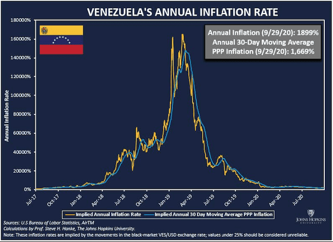

SMALL WARS JOURNAL ·
Ahead of the Future Fight, Washington Should “Enlist and Expand” Regional Partnerships for Dollarization
Read the original“The whole reason why it is an advantage for a developing country to tie to a major country is that historically speaking the internal policies of developing countries have been very bad. U.S. policy has been bad, but their policies have been far worse.” – Milton Friedman
On January 3, 2026, U.S. forces executed Operation Absolute Resolve in Venezuela, concluding a months-long campaign of intelligence preparation, force positioning, and interagency coordination that culminated in the removal of Nicolás Maduro from power.
The operation did not represent a sudden return of American attention to the Western Hemisphere, but the formal acknowledgment of a strategic reality Washington had quietly been preparing for: that great-power competition is no longer confined to distant theaters, and that the hemisphere itself has become an active front in a wider geopolitical contest.
In Washington, the operation has been explained as a response to proximate concerns: narcotics trafficking, oil markets, and (to a lesser extent) humanitarian collapse. These factors matter, but they do not explain the scale, timing, or deliberateness of the action. Operation Absolute Resolve was the culmination of nearly three decades of adversarial entrenchment in the Western Hemisphere, during which China, Russia, and Iran treated Venezuela as a permissive foothold for intelligence access, military cooperation, sanctions evasion, and economic leverage.
Removing that foothold was not an end in itself. It was a necessary condition for restoring strategic depth in the hemisphere and denying America’s principal competitors the ability to threaten the industrial, financial, and logistical rear that would underpin any major conflict in the Indo-Pacific – including in Venezuela, where decades of collapse under Maduro have already forced the economy into de facto dollar use and will shape the terms of any post-Maduro reconstruction.
Decoupling from China only to relocate production to equally distant – and often equally fragile – partners in Southeast Asia does little to resolve this challenge. Strategic resilience cannot rest on supply chains that remain thousands of miles from the continental United States. If the hemisphere is to function as a true rear area in great-power war, then Latin America – by geography, capacity, and proximity – must be treated not as an afterthought, but as the natural industrial base supporting American power projection abroad.
This logic is now explicit in U.S. strategy. The 2025 National Security Strategy’s Trump Corollary to the Monroe Doctrine frames hemispheric preeminence as a prerequisite for national security and defines Washington’s approach in clear terms: “Enlist and Expand.” Enlist trusted regional partners to stabilize the hemisphere, nearshore industry, and deny adversarial access; expand America’s economic and security footprint so that the Western Hemisphere becomes the partner (and production base) of first choice.
But geography alone is not enough. Industrial capacity follows capital, confidence, and credible rules. Nearshoring will not succeed where inflation, capital controls, or currency instability erase returns overnight. Latin America has experimented with multiple mechanisms to import credibility – currency boards, hard pegs, and inflation-targeting regimes among them – but these arrangements remain vulnerable to political reversal, balance-sheet manipulation, or external pressure in moments of stress.
This is where the region’s uneven but consequential embrace of dollarization becomes strategically decisive. Dollarization – more so than intermediate alternatives – does not merely constrain monetary policy; it removes it from domestic politics altogether. It is not a technocratic curiosity, but a mechanism for anchoring near-shored supply chains, stabilizing investment horizons, and binding the hemisphere’s industrial base to the monetary architecture that underwrites American power at a moment when that architecture is being actively contested.
Creating A Neighborhood For Investment
As our geopolitical reality continues to evolve, it is equally important to assess the economic conditions shaping the United States and its partners across the hemisphere. The COVID-19 pandemic offered a stark reminder of the dangers of overreliance on distant sources for critical goods and capabilities, but the challenge extends well beyond that moment.
From the acquisition side of the sea services, the limits of our industrial base are impossible to deny. Capacity that once matched operational need has steadily eroded, and the gap is widening just as strategic demand rises – whether in the shipyards struggling to deliver hulls on time or in core munitions production lines unable to sustain even a modest surge in production.
This assessment is reinforced by a 2025 Center for Naval Analyses munitions-focused defense industrial base wargame, which concluded that “the U.S. defense industrial base is struggling to meet production targets, and its ability to increase production rapidly is limited,” a fragility that directly constrains readiness and deterrence.
Although the report argues that “using the authorities of the Defense Production Act could help increase the supply of critical and strategic materials and increase response time of the industrial base,” Nadia Schadlow, principal author of the 2017 National Security Strategy, has cautioned that Washington still lacks clear evidence that DPA dollars actually preserve or expand smaller, failing industrial sectors.
At the same time, the instinct to tighten “Buy American” mandates tends to overlook conditions in the real economy. Instead of building resilience, such rules can narrow the supplier base, drive longer timelines, and deepen dependence on fragile supply chains precisely when the force needs flexibility and surge capacity.
Although policymakers have made meaningful progress in pulling supply chains away from China, the Department of War must now confront a deeper question: does reshoring industry or shifting production to distant partners like Vietnam truly improve strategic security, or would the United States be better served by working with partners in our natural industrial rear?
Gen. Bryan Fenton (ret.), former commander of U.S. Special Operations Command, recently outlined the urgent need for regional engagement, highlighting vulnerabilities like rapid munitions depletion, supply chain sabotage, and industrial undercapacity that could cripple the U.S. in a major conflict.
“The command is working to help companies in the U.S. and its partners and allies to find the private capital they need to bring to market key innovations in sensors, artificial intelligence, uncrewed systems, and quantum computing,” he noted.
As SOCOM increasingly views partnerships as critical to operational success, the logic becomes clear: economic integration (to include strategic near-shoring) with stable regional partners is no longer optional: it is a national security imperative.
Colin Grabow, associate director at the Cato Institute’s Herbert A. Stiefel Center for Trade Policy Studies, underscored how trade incentives can make regional integration viable in an email exchange in May, 2025.
“One possible inducement to nearshoring is the ability to engage in duty-free trade with the United States, the world’s largest economy,” he wrote. “This could be facilitated both through an abandonment of Washington’s protectionist tariff-led trade agenda, renewing the US’s commitment to existing free trade agreements, and the conclusion of new deals with regional partners that could serve as the building blocks of an eventual Free Trade Area of the Americas.”
But private capital will not flow into places where the currency is unstable and inflation can erase returns overnight. While fiscal policy is essential, it is not enough: sustainable investment also requires stable, predictable money. Without it, even strong fiscal reforms are undercut by inflation and currency risk.
Near-shoring succeeds only when production is protected – physically and financially. That is why a forward posture in the hemisphere must be matched by a stable monetary foundation. The Department of War can help create that foundation by securing trade corridors, co-financing regional industrial nodes, and helping partners protect the institutions that sustain currency confidence against foreign coercion. Dollarization then becomes not a U.S. demand, but the logical choice for governments seeking to attract investment into secure, resilient supply chains tied to the hemisphere’s industrial rear.
In an interview in June, 2025, Argentine economist Emilio Ocampo, a leading authority on dollarization and former economic adviser to President Javier Milei, told me, “Eliminating exchange rate risk removes a major source of uncertainty – and in that regard, dollarization clearly makes the country more attractive to foreign investors.”
While countries like Brazil – who now openly conduct trade with the PRC in local currency, moving toward de-dollarization – are showing their willingness to embrace the Chinese Communist Party, partners like Ecuador are taking the opportunity for partnership with the United States seriously. Ecuadorian President Daniel Noboa has invited an American troop presence in the country and recently pushed legislation that would solidify the dollar as Ecuador’s sole currency.
Ecuadorian economist Pablo Lucio Paredes – director of the Institute of Economics at the University San Francisco de Quito – was one of the key architects of dollarization inside the country when the policy was finally adopted.
“Dollarization is a way of accepting that your institutional monetary system doesn’t work – and that you cannot fix it. It means opting instead for a more stable, secure institutional framework,” he told me in an interview in March, 2025.
In a region increasingly exposed to Chinese influence and monetary opacity, such a tether to the U.S. financial system does not impose new a regime of dependency; rather, it serves as strategic autonomy from predatory lending and currency manipulation designed to entrap governments under the guise of Belt and Road progress. For nations emerging from decades of left-wing populism and chronic monetary mismanagement – from Venezuela to, increasingly, Bolivia, Paraguay, and Argentina – the appeal of a dollarized system lies in the ability to break with old political temptations and signal a commitment to rules that markets trust.
Dollarization: The Ecuadorian Case
Ecuador dollarized not by choice, but due to economic collapse. In the late 1990s, a financial crisis driven by falling oil prices, El Niño damage, and banking sector failures led to the collapse of approximately 60% of financial institutions by early 1999. A surprise bank holiday on March 8 turned into a prolonged deposit freeze, destroying confidence in the sucre.
To raise revenue, the government imposed a 1% financial transactions tax, triggering $2.6 billion in capital flight – about 19% of GDP. The sucre plummeted from 4,493 per dollar in early 1998 to over 18,000 by the end of 1999, while inflation neared 100% and real wages collapsed. By January 2000, the exchange rate hit nearly 30,000 per dollar.
On January 9, 2000, President Jamil Mahuad announced Ecuador would adopt the U.S. dollar. Protests followed, and Mahuad was ousted less than two weeks later; yet, dollarization remained. By September, the sucre was fully withdrawn. Over 60% of deposits were already in dollars, and dollar pricing was widespread.
Despite opposition from the IMF and Ecuadorian elites, results were swift: inflation fell from 96% in 2000 to 37% (with 22% also reported) in 2001, and into single digits by 2003. Similarly, interest rates dropped from 89% at the end of 1999 to a mere 16% the next year. The dollar brought monetary stability and credibility.
When Rafael Correa took office in 2007, many expected him to end dollarization. He didn’t. Though he called it a “monetary straightjacket,” Correa maintained the system throughout his decade in power. His expansive fiscal agenda clashed with dollarization’s limits.
As Paredes noted, attempts to expand the Central Bank’s balance sheet were constrained: “If Ecuador had kept its own currency, there would have been massive money printing – with the consequences we already knew from the 1998–1999 crisis.”
While Ecuador remains politically volatile, its annual inflation rate was recorded at a mere 1.05% in November 2025 – the lowest in Latin America and below that of the United States. Dollarization hasn’t solved every problem, but it has anchored monetary stability in a historically volatile region. Amid global shifts, Ecuador’s choice endures as a commitment to fiscal discipline and a liberal monetary order.
Outside of Ecuador, few were more influential in advising and defending the policy than Steve Hanke, the Johns Hopkins economist who had boots on the ground to make the project a reality.
In a recent interview on Ecuador’s dollarization 25 years later, he explained: “Dollarization’s strength is that it provides monetary and economic stability. And while stability might not be everything, everything is nothing without stability.
A senior U.S. military official with intimate knowledge of supply chains, quoted under condition of anonymity, offered a parallel perspective grounded in strategic doctrine during an interview in Washington in July, 2025.
“Maslow’s hierarchy applies in the battlespace and beyond: security applies to people, society, and economics. You need security before anything else or people will not interact, trade, or have confidence in their safety. The same logic that applies to counter-insurgency operations registers with supply chains. Without financial security, the rest of the structure collapses.”
Though speaking from different theaters of the war of ideas, both underscore a shared principle: enduring systems require secure foundations.
Sound Money, Enduring Order
In this new context, dollarization isn’t merely about monetary stability – it’s about embedding nations within the institutions, norms, and networks of a liberal financial order. It signals seriousness about inflation, investment and institutional credibility. It means choosing to play by rules that, while constraining, are also enduring.
Refusing the order the dollar represents carries consequences. As Paredes explains, “Ecuador would have gone the way of Argentina – or perhaps even Venezuela if not for the dollar. The difference was that dollarization removed the temptation to inflate away political problems.”
The results are painfully visible in Venezuela: once among the region’s wealthiest, it now stands as the hemisphere’s most devastating economic collapse. In 2018, inflation surged to approximately 130,000 percent. More than 8 million Venezuelans have fled, the largest refugee crisis in Latin American history – a crisis felt by host nations across the region. The bolívar is no longer trusted, even at home. What remains is a cautionary tale: a state that clung to monetary sovereignty, only to see that sovereignty hollowed out by hyperinflation and collapse.

Against that backdrop, dollarization is no longer a fringe idea – it’s a viable path toward credibility, a way for countries long plagued by inflation, capital flight, and broken trust to embed themselves within the world’s most stable financial architecture. This is not a surrender of sovereignty, but a redefinition of it.
By anchoring their monetary systems to a currency beyond the reach of domestic manipulation, states are not relinquishing control – they are asserting a deeper kind of control: one grounded in predictability, integration, and the discipline required to function in a rules-based order. As great power competition intensifies and global trade is rewritten, these decisions will matter more, not less. Dollarization isn’t a silver bullet. But in a region scarred by volatility and hungry for investment, it remains one of the clearest paths to durable alignment with the liberal world.
Yet such alignment doesn’t require imposing new systems from Washington. It begins by recognizing and strengthening choices regional partners are already making – choices reflecting a preference for stability, openness, and integration with the U.S.-led order.
Ocampo makes clear that in places like Argentina, dollarization isn’t an imposition; it’s the recognition that people have already chosen the dollar for their most important transactions.
“Official dollarization is about freeing the stock of dollars that people have already accumulated,” he told me. “It’s not about imposing a new currency – it’s about removing barriers to using the dollar and taking the first step toward monetary freedom.” Dollarization, then, is simply acknowledging the region’s existing preference for the dollar and the order that backs it.
As Secretary of Defense Hegseth recently noted, “The United States wants a hemisphere of secured prosperous sovereign nations. This is not globalism or interventionism; instead, it is a golden age of shared national interest. We want this to be a golden age for our countries and this hemisphere.”
In this context, dollarization emerges as a strategic option – already proven in practice, with Ecuador as its roadmap. Its experience over the past 25 years offers powerful lessons. As Paredes recalls, “It was the decision of a single leader… In the midst of chaos, he chose what seemed the most extreme solution – but for that very reason, it was the most welcome.”
The logic is so compelling, even communist Cuba is embracing the yanqui greenback. In January of this year, Diaz-Canel’s regime quietly announced “partial dollarization,” a humiliating last-ditch effort that shows, when push comes to shove, sound money provides what ideology cannot. Notably, Havana didn’t turn to the Chinese yuan in their bid to avoid economic collapse.
A post-Maduro Venezuela now faces the same revealed choice confronting other crisis-scarred economies in the hemisphere: attempt to resurrect a discredited national currency, or formally adopt the dollar that Venezuelans already rely on in practice. In that sense, dollarization would not represent a new imposition, but the monetary normalization of a society that has already voted with its feet – and perhaps a glimpse into things to come.
At the end of the day, the American dollar may be paper, but in a growingly uncertain world, one man’s fiat can be another man’s gold.